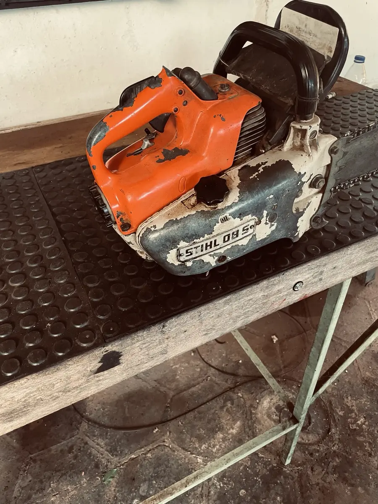
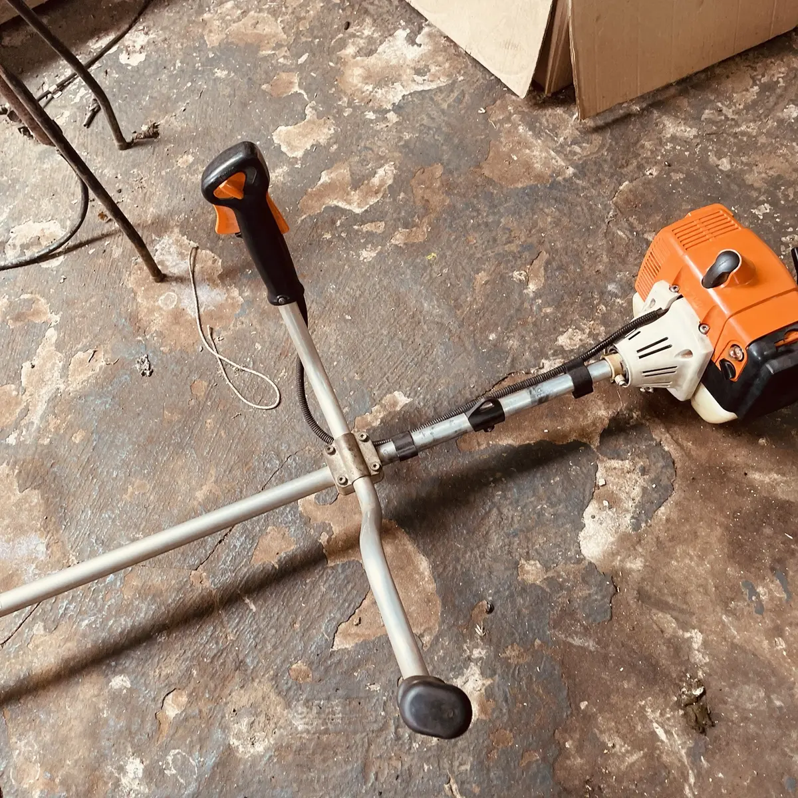
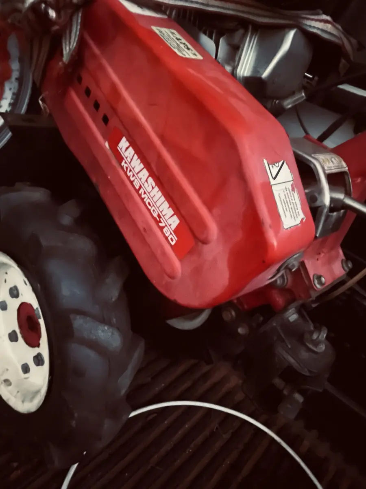
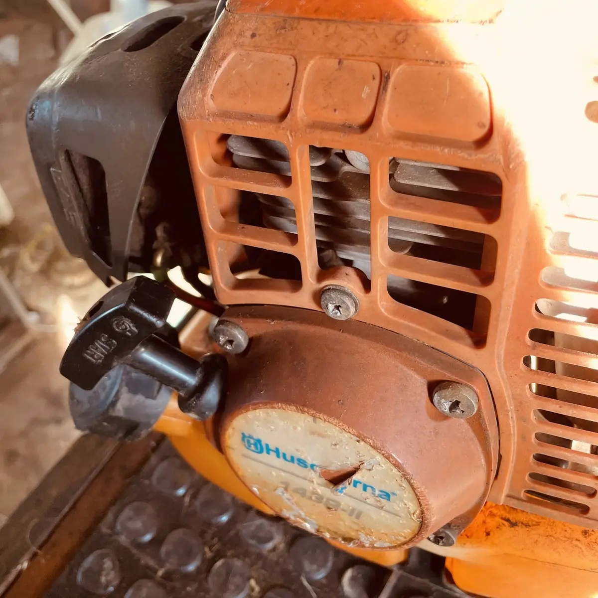
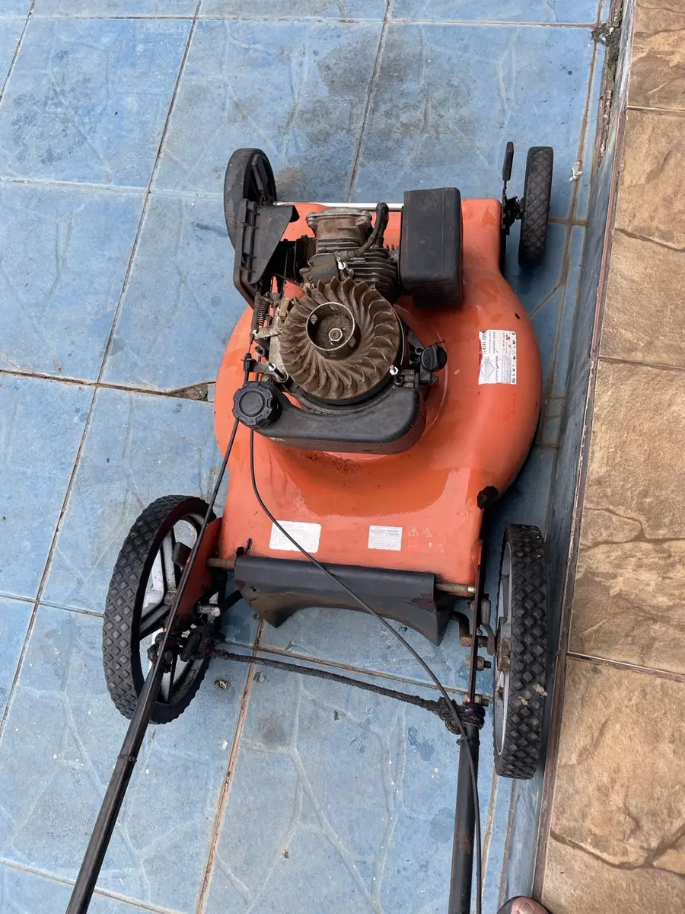

Roçadeiras
Limpeza, regulagem, partida, embreagem e revisão completa.
Consultar serviçoAssistência técnica em Potirendaba e região
A Oficina João Ferrari faz diagnóstico cuidadoso, orçamento transparente e manutenção de roçadeiras, motosserras, lavadoras e motores a combustão em Potirendaba/SP.
O que fazemos
Atendimento multimarcas para equipamentos usados no campo, jardim, construção e rotina doméstica.
Limpeza, regulagem, partida, embreagem e revisão completa.
Consultar serviçoDiagnóstico, afiação, carburador, lubrificação e conjunto de corte.
Consultar serviçoReparo de bombas, vazamentos, perda de pressão e revisão preventiva.
Consultar serviçoManutenção em motores a gasolina de diferentes potências e marcas.
Consultar serviçoRevisão de motor, sistema de partida, transmissão e regulagens.
Consultar serviçoCheck-up para reduzir falhas, gastos inesperados e tempo parado.
Consultar serviçoSimples do começo ao fim
Nada de surpresa na entrega. Avaliamos o equipamento e explicamos o diagnóstico, as peças e a mão de obra.
Iniciar atendimentoEnvie uma mensagem com a marca, modelo e sintomas do equipamento.
O equipamento é inspecionado para localizar a causa real da falha.
Você recebe o valor antes do serviço e decide com tranquilidade.
Depois do conserto, fazemos os testes necessários antes da retirada.
Equipamentos reais
Alguns dos equipamentos que chegam à Oficina João Ferrari para diagnóstico, manutenção e recuperação.





Cuidado inteligente
Máquina parada atrasa o serviço. Uma revisão periódica ajuda a identificar desgaste antes que ele vire um reparo maior.
PRINCIPAIS MARCAS ATENDIDAS
Perguntas e respostas
Aqui estão as respostas rápidas. Se ainda ficar alguma dúvida, fale diretamente com o João.
Tirar uma dúvidaAtendemos roçadeiras, motosserras, lavadoras, motores estacionários, motocultivadores, cortadores de grama e outros equipamentos a gasolina.
Primeiro fazemos a avaliação técnica para encontrar a causa da falha. Depois, você recebe o valor do serviço e das peças antes de autorizar o reparo.
Sim. A Oficina João Ferrari é multimarcas e trabalha com equipamentos de fabricantes como STIHL, Husqvarna, Branco, Toyama, Buffalo, Kärcher, Tekna, Kawashima e Trapp.
O atendimento é feito com hora marcada. Chame no WhatsApp antes de levar o equipamento para combinarmos o melhor horário.
Sim. A garantia varia conforme o tipo de reparo e as peças utilizadas; as condições são explicadas com clareza na entrega.
Estamos na Rodovia Luiz Carlos Brandolezi, km 07, em Potirendaba, São Paulo. O atendimento é com hora marcada.
Vamos conversar?
Fale diretamente com João Ferrari e explique o que está acontecendo.